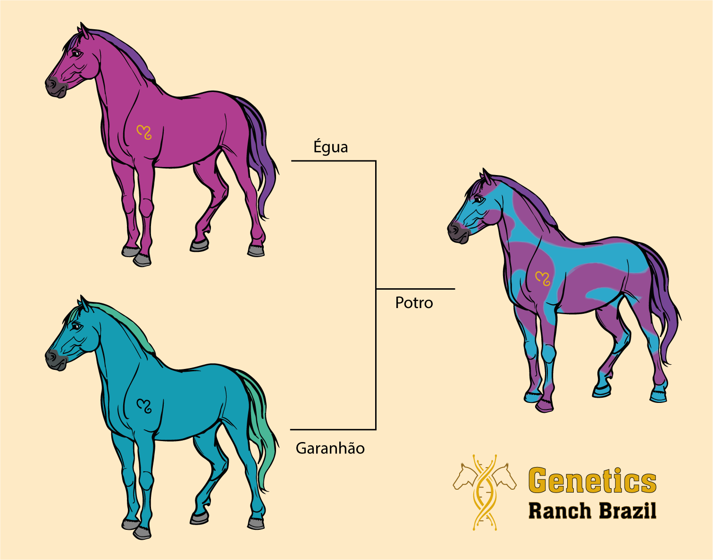
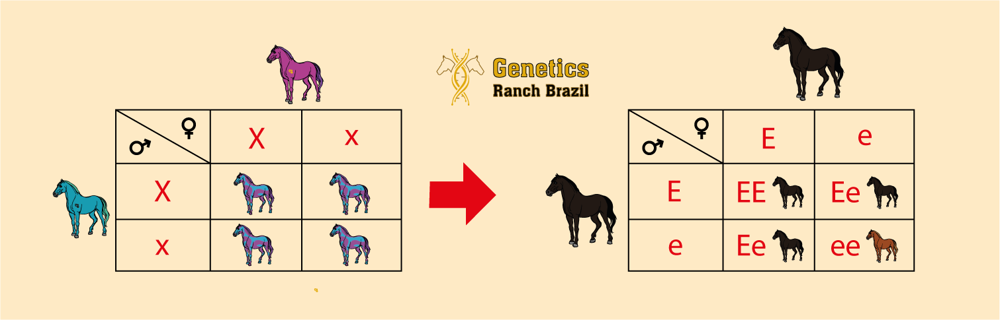
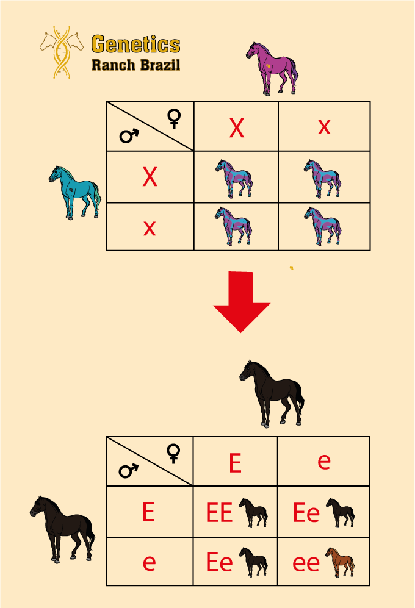

Hereditariedade dos Gametas e Apresentação do Quadro de Punnet
Denominamos de hereditariedade o fenômeno em que os genes e características dos pais, tanto da égua quanto do garanhão, são transmitidos para sua prole, os potros. Assim, as características genéticas e fenotípicas são herdadas de geração em geração. Os cavalos possuem 32 pares de cromossomos, totalizando 64 . Durante a reprodução, os cromossomos do pai se combinam com os da mãe, sendo que o pai contribui com 32 cromossomos e a mãe com outros 32, totalizando os 64 componentes genéticos do potro, que é a nova célula formada durante a reprodução.
Ao conhecer o genótipo dos pais, pode-se prever os possíveis resultados genéticos ao se fundir os gametas dos pais. Como? Com o auxílio do Quadro de Punnet.
Quadro de Punnet
O mesmo é utilizado para descobrir os possíveis genótipos do produto de um cruzamento e suas probabilidades. Funciona da seguinte maneira: na primeira coluna, tanto vertical quanto horizontal, são colocados os alelos do macho e da fêmea. Nos quadrantes restantes, serão calculadas as possíveis combinações que a junção dos gametas podem produzir.
Realizar o cruzamento é bem simples, basta juntar os possíveis gametas em cada um dos quadrados em branco. Se o gameta A se juntar com outro gameta A, o resultado será AA (homozigoto), porém caso se junte ao gameta a, o resultado será Aa (heterozigoto).
 Formação das Pelagens
As cores das pelagens são formadas combinando certos genes que produzem especificamente uma cor ou padrão. Para entender melhor como funciona, devemos considerar cada gene como uma única camada, que sobrepostos, formam uma pelagem.
Observando a imagem seguir, conseguimos entender melhor como funciona a combinação dos genes.
1º - A ausência do gene de extensão age deixando a pelagem com um tom avermelhado.
2º - Com apenas uma cópia do gene Creme, a cor passa a ter um tom dourado, chamamos então de Palomino.
3º - Entra em ação o gene Tobiano, que tira o pigmento de algumas áreas do corpo, formando essas manchas brancas.
4º - Por fim, o gene Splashed White remove o pigmento de uma área ainda maior (abdômen e face, principalmente, afetando a cauda também). A junção de todos esses genes resulta na pelagem final: Palomino Pinto.
A Importância de Compreender a Probabilidade Hereditária e Saber Identificar as Pelagens.
Entender como funciona o processo hereditário de cores e pelagens é de extrema importância, principalmente para criadores. Há várias razões diferentes e todas necessitam da organização e apresentação correta do material envolvido, dentre elas:
• Identificar corretamente um indivíduo por razões legais.
• Dados de saúde/ atestado de sanidade animal.
• Produzir potros com a pelagem desejada. Para os criadores, saber como alcançar a pelagem desejada é essencial, pois irá facilitar o manejo reprodutivo dos animais. Obter este conhecimento é a chave para o sucesso.
• Evitar cores que não são aceitas pelas associações de cada raça. Por exemplo, cavalos da raça Cleveland Bay devem ser castanhos, Friesians devem ser pretos e Suffolk Punches devem ser alazão para conseguirem seus registros.
• Evitar potenciais problemas de saúde associados a algumas mutações genéticas de pelagem, como por exemplo o OLW (Overo Lethal White – ou Síndrome Letal do Overo Branco (SLOB).
Referências
Horse Colors and Patterns - The Ultimate Guide. Site Horse and Us - Multimedia Educational Content About Horses. Disponível em: www.horsesandus.com/horse-colors-and-patterns/.